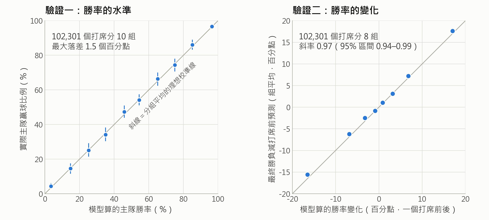

一句話
改判的把握超過門檻，就挑。門檻只由兩個數決定：這個判決改過來值多少（判決價值），和這次挑輸了會損失多少（挑戰權價值）。
門檻 ＝ 挑戰權價值 ÷（判決價值 ＋ 挑戰權價值）
適用「成功保留、失敗扣一次」的規則；兩個價值的單位都是勝率百分點。
判決價值 ΔW
改判後的勝率減原判的勝率。從中職 2023–2026 例行賽 1,362 場、390,489 顆投球建的勝率表查出來。挑戰權價值 C
少一次挑戰權，後面會損失多少勝率。從九局下往回一個半局一個半局推出來（動態規劃）。把握 p
現場的人對「會改判」的判斷。模型不替人判斷，只回答要多少把握才夠。直接查門檻
查門檻卡
卡片上的門檻：–
自己代數字
門檻：–
預設值是提案裡的例 1：這個判決值 17.19 個百分點；只剩 1 次時 C ＝ 0.630，門檻 3.5%；還剩 2 次時 C ＝ 0.045，門檻 0.3%。
兩張門檻卡
重播門檻卡（18 格）
| 局 | 1 | 2 | 3 | 4 | 5 | 6 | 7 | 8 | 9 |
|---|---|---|---|---|---|---|---|---|---|
| 還剩 2 次 | 2%1.74 | 2%1.61 | 1%1.25 | 1%1.02 | 1%0.77 | 1%0.53 | 1%0.33 | 1%0.16 | 1%0.04 |
| 只剩 1 次 | 13%13.06 | 13%12.95 | 11%11.10 | 10%10.04 | 9%8.71 | 7%7.17 | 6%5.56 | 4%3.79 | 2%1.78 |
依 26,279 個實際壘上判決分格。每格是「格內平均挑戰權價值 ÷（平均判決價值 ＋ 平均挑戰權價值）」。大字是卡片上印的整數（最低 1%），小字是未取整的值。
好壞球門檻卡（108 格，試算）
還剩 2 次（欄＝局數）
| 球數 | 壘上 | 1 | 2 | 3 | 4 | 5 | 6 | 7 | 8 | 9 |
|---|---|---|---|---|---|---|---|---|---|---|
| 滿球數 | 無人 | 16%15.7 | 15%14.7 | 13%13.4 | 12%11.7 | 10%10.2 | 9%8.7 | 6%6.4 | 4%4.1 | 1%1.3 |
| 有人 | 10%10.2 | 9%9.4 | 9%8.6 | 7%7.3 | 6%6.4 | 5%4.7 | 4%3.9 | 3%2.7 | 1%0.9 | |
| 兩好球或三壞球（不含滿球數） | 無人 | 32%31.8 | 32%32.3 | 28%28.5 | 25%25.5 | 23%23.0 | 19%19.4 | 15%15.3 | 10%9.9 | 4%3.9 |
| 有人 | 19%19.2 | 18%18.3 | 16%16.4 | 14%14.4 | 13%13.3 | 10%10.3 | 8%8.2 | 5%5.4 | 2%2.0 | |
| 其他球數 | 無人 | 51%51.0 | 52%51.7 | 47%47.3 | 44%43.6 | 41%40.5 | 35%35.3 | 29%28.9 | 20%19.9 | 9%8.6 |
| 有人 | 39%38.7 | 37%37.3 | 34%34.2 | 32%31.5 | 29%28.6 | 23%23.3 | 18%18.3 | 13%12.8 | 5%4.8 |
只剩 1 次（欄＝局數）
| 球數 | 壘上 | 1 | 2 | 3 | 4 | 5 | 6 | 7 | 8 | 9 |
|---|---|---|---|---|---|---|---|---|---|---|
| 滿球數 | 無人 | 28%28.2 | 27%27.0 | 25%25.5 | 23%23.1 | 21%21.3 | 19%19.4 | 16%15.9 | 12%12.1 | 6%5.7 |
| 有人 | 19%19.3 | 18%18.1 | 17%17.1 | 15%15.2 | 14%14.1 | 11%11.1 | 10%10.2 | 8%8.2 | 4%3.8 | |
| 兩好球或三壞球（不含滿球數） | 無人 | 50%49.5 | 51%50.6 | 47%46.7 | 44%43.8 | 42%41.6 | 38%38.0 | 33%33.3 | 26%26.1 | 15%14.9 |
| 有人 | 33%33.4 | 33%32.5 | 30%30.2 | 28%27.7 | 27%26.9 | 23%22.6 | 20%19.9 | 16%15.7 | 8%8.1 | |
| 其他球數 | 無人 | 69%68.6 | 70%69.7 | 66%66.4 | 64%63.8 | 62%61.9 | 58%58.1 | 53%53.0 | 44%44.4 | 29%28.8 |
| 有人 | 57%57.0 | 56%56.0 | 53%53.4 | 51%51.2 | 49%48.9 | 44%43.6 | 38%38.3 | 32%32.1 | 18%17.8 |
中職一軍的好壞球挑戰細則還沒有公布。這張卡用 MLB 2026 的逐球資料，套中職的勝率模型試算；中職實施後要用中職資料重做。依局數、球數三類、壘上有沒有人分格。大字是卡片上印的數字（四捨五入到整數，最低 1%），小字是未取整的值。108 格的每一格都由兩套獨立寫的程式算過，結果相同。A6 列印版也是這張卡；互動 Demo 和計算機裡目前仍是上一版的 54 格卡（不分壘上有沒有人、10% 以上取到 5 的倍數）。任何單一局面的精確門檻請用計算機查。
三個發現
1–2%
重播挑戰權很便宜
開賽還剩 2 次時，失去一次只值 0.11 個勝率百分點，卡片門檻只有 1–2%。只剩 1 次時，門檻從一局的 13% 降到九局的 2%。5.3%
球隊常常沒用完
2024-05-28 改制後例行賽 968 場，九局內球隊挑戰 1,097 次，翻盤率 30.3%；兩次都用完的隊伍場次只有 5.3%。不能套用
好壞球是另一回事
好壞球挑戰權貴得多（開賽只剩 1 次時值 1.77 個百分點，重播是 0.93），門檻高很多，而且要看球數：2 好 3 壞的球改判價值中位數 4.76 個百分點，0 好 0 壞只有 0.62。方法
- 勝率表（兩段拆解）。局面切細後有 46,656 格，33% 沒有資料，直接計次連方向都可能相反。改成先算「這個半局得幾分」，再算「半局結束後的比分會不會贏」。留一年交叉驗證，預測分 10 組，和實際勝率最大差 1.5 個百分點；Brier 分數 0.157。
- 挑戰權價值（從九局下往回推）。手上 r 次的價值 ＝ 這個半局用掉的預期收益 ＋ 留到下個半局的價值；C ＝ 有 r 次的價值 − 有 r−1 次的價值。
- 重播的潛在爭議校準。沒被挑的判決對不對沒有人知道，所以假設一群潛在爭議，讓模型的挑戰次數和翻盤率對上實際資料。這組參數定不出唯一的值，是已知限制。
- 卡片。現場不可能算公式，所以按局數（好壞球再加球數）分格，每格印一個數字。
檢驗
- 歷年規則變動。跨期整體看，規則越寬，球隊挑得越多、翻盤率越低，和模型方向一致（不是每一期都如此）。中間三期共 1,492 場的挑戰結果沒有用來選參數（勝率表用到部分同期的比賽，所以不是整套模型完全獨立的留出檢驗）。
- 局數。模型的門檻越後面越低，被挑判決的翻盤率也隨局數下降（1–3 局、4–6 局、7–8 局、9 局）：中職改制後 34.3% → 30.4% → 26.8% → 26.1%；MLB 教練挑戰 71.3% → 61.2% → 44.4% → 32.6%。
- 卡片和精確門檻比。對 26,279 個實際壘上判決，照卡片挑拿到照精確門檻挑的 98.8%–100.0%（還剩 2 次）和 91.4%–98.7%（只剩 1 次）；範圍是兩種把握設定的結果，不是每個局面的保證。
- 好壞球卡的模擬。固定 MLB 2026 的投球順序，球員只看得到帶雜訊的位置。換算每隊一季 120 場、含延長賽、和模擬的球員挑法比（24 組亂數；括號是按場重抽的 95% 區間，不含模型設定的不確定性）：「把握過半才挑」−0.65 勝（−0.69～−0.60），照 108 格卡挑 +0.29 勝（0.26～0.31），照精確門檻挑 +0.51 勝（0.47～0.54）。上一版不分壘上有沒有人的 54 格卡是 +0.22 勝（0.20～0.25）；108 格卡比它多 0.06 勝（0.05～0.08）。在比較的這幾種挑法裡，「把握過半才挑」最差。
- 和球員實際拿回的價值比（九局內）：108 格卡 +0.21 勝（0.13～0.29）。這個增益對模型設定很敏感：感知雜訊調高到 1.25 倍，或球員的把握偏高、偏低時，照卡片挑會低於球員實際拿回的價值。所以卡片增益的大小還不能確定。
以上是「和資料一致」的檢驗，不是實際戰績；不能據此說球隊照卡片可以多拿幾勝。


邊界和下一步
- 門檻卡沒有在現場試用過。查不查得到、記不記得住、限時內用不用得對，都還沒測。
- 把握要靠人判斷。把握偏高或偏低時，卡片的效果會變差，所以規劃搭配賽後對答案的回饋訓練；訓練設計列入決賽前的開發時程。
- 重播沒被挑的判決對不對沒有人知道，所以不判定教練是否挑得太少；潛在爭議的參數定不出唯一的值，每個球季要用新資料重新校準。
- 好壞球是 MLB 資料套中職勝率模型的試算。
- 卡片上的數字每個球季要用新資料重跑；公式和方法不變。
這個網站有什麼
- 互動 Demo：規則試算沙盤、門檻卡、可信度檢驗。
- 挑戰門檻計算機：輸入局面，查勝率、判決價值和門檻；手機可用。
- 門檻卡 A6 列印版：兩張雙面共 4 頁（重播 18 格、使用說明、好壞球 108 格分還剩 2 次和只剩 1 次兩面），可以直接列印。
本站只含統計量和模型輸出表，不含任何逐球原始資料。